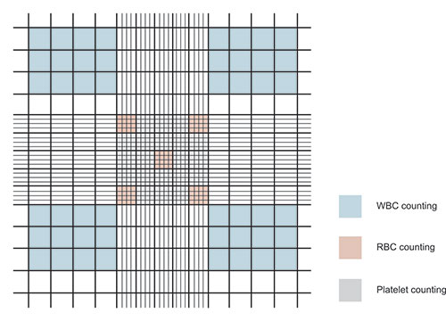

Experiment 12: Enumeration of Total White Blood Corpuscles (WBC) Count
Aim
To enumerate total white blood corpuscles (WBC) count.Requirements
- Denatured spirit or alcohol
- Lancet
- Cotton swab
- Turk’s fluid
- WBC pipette
- Neubauer’s chamber

Introduction
White blood cells (WBCs) are nucleated, amoeboid cells without hemoglobin. They originate from extravascular tissue and are involved in body defense, antibody formation, and tissue repair. WBCs are classified into granulocytes (eosinophils, basophils, neutrophils) and agranulocytes (lymphocytes, monocytes).
The blood sample is diluted 1:20 with Turk’s fluid (water, glacial acetic acid, gentian violet). Red cells are lysed, and WBC nuclei are stained for visibility under a microscope.
Normal WBC count ranges from 5000 to 10,000/mm³. It increases in infections and decreases in certain diseases.

Procedure
- Sterilize fingertip with alcohol and let it dry.
- Prick finger and draw blood into WBC pipette up to 0.5 mark.
- Fill pipette with diluting fluid up to 11 mark and mix well.
- Place cover slip on counting chamber.
- Allow a drop of diluted blood to enter chamber by capillary action. Avoid bubbles and overfilling.
- Let chamber rest for 3 minutes.
- Observe under low power microscope.

Calculation
- Count WBCs in 4 groups of 4 squares (total 16 squares).
- Volume of 4 squares = 0.4 mm³
- WBCs in 0.4 mm³ = N × 10
- WBCs in 1 mm³ = (N × 10) / 0.4 = N × 25
- Dilution factor = 20
- Total WBC count = N × 25 × 20 = N × 500